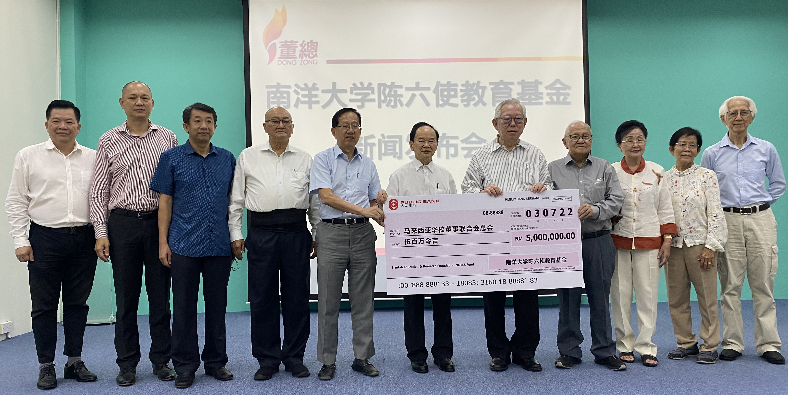

南洋大学陈六使教育基金捐献500万令吉委托董总管理
林忠强（右五）代表南大教育与研究基金会移交500万令吉模拟支票给董总，由陈大锦（左六）接领。左起为杨安山、庄俊隆、吴小铭、杨应俊和陈友信；右起为陈培和、王宝玉、魏顺莲和林顺忠。今年是南洋大学创校人陈六使先生125岁冥诞暨逝世50周年纪念。南大校友饮水思源，继续贡献社会，发挥余光，由南大教育与研究基金会主催成立“南洋大学陈六使教育基金”，旨在弘扬陈六使献身华文教育的精神，传承和发扬南大精神，提供助贷学金予家境贫寒、品学兼优的各族华校生，以及资助文化与教育事业的发展。南洋大学陈六使教育基金对华文教育有着重大的意义，除了帮助家境贫寒的孩子完成大学课程，这笔款项还能循环使用，让更多孩子受惠。
在2022年10月15日举行的“南大教育与研究基金会移交500万捐款”仪式上，董总主席陈大锦非常感谢南大教育与研究基金会和南大校友会，对董总的信任和支持，更感恩全球南大校友对华文教育的守护。董总受委托管理此捐款，并由董教总华文独中工委会奖贷学金委员会负责面试和遴选等工作。
南大教育与研究基金会执行董事林忠强博士发言时，忆起当年初创南洋大学之际，动员整个新马华社，三轮车夫义踏、理发师义剪、舞女义舞等等，众志成城。自2022年4月1日发起，已筹获超过1,700万令吉，可说缔造了另一个创举。
林忠强感谢南大校友和热心人士的大力支持，让这次筹款取得成功，也感谢董总接受委托管理“南洋大学陈六使教育基金”所捐出的500万令吉及其常年颁发奖贷学金业务，造福莘莘学子。
此500万令吉教育基金分为四大项目，即华文独中大学贷学金、国民型中学大学贷学金、华文独中师资培育专案计划助学金和独中教师教育专业助学金。
有关华文独中和国民型中学大学贷学金，欲前往国内外大学修读学士学位的独中高中统考证书持有者和国民型中学的毕业生皆可提出申请。
此外，华文独中高中统考（UEC）毕业生和马来西亚高等教育文凭（STPM）毕业生可申请“华文独中师资培育专案计划”，符合条件者将获“师培助学金”，惟毕业后须履行合约在独中任教。
而有意前往国内外大专研究所修读硕、博士课程或作专题研究的独中教师，则可申请“独中教师教育专业助学金”。
其他出席者包括董总署理主席陈友信、副主席杨应俊、吴小铭、秘书长庄俊隆、财政杨安山；南大教育与研究基金会财政陈培和、副财政魏顺莲，以及王宝玉和林顺忠。